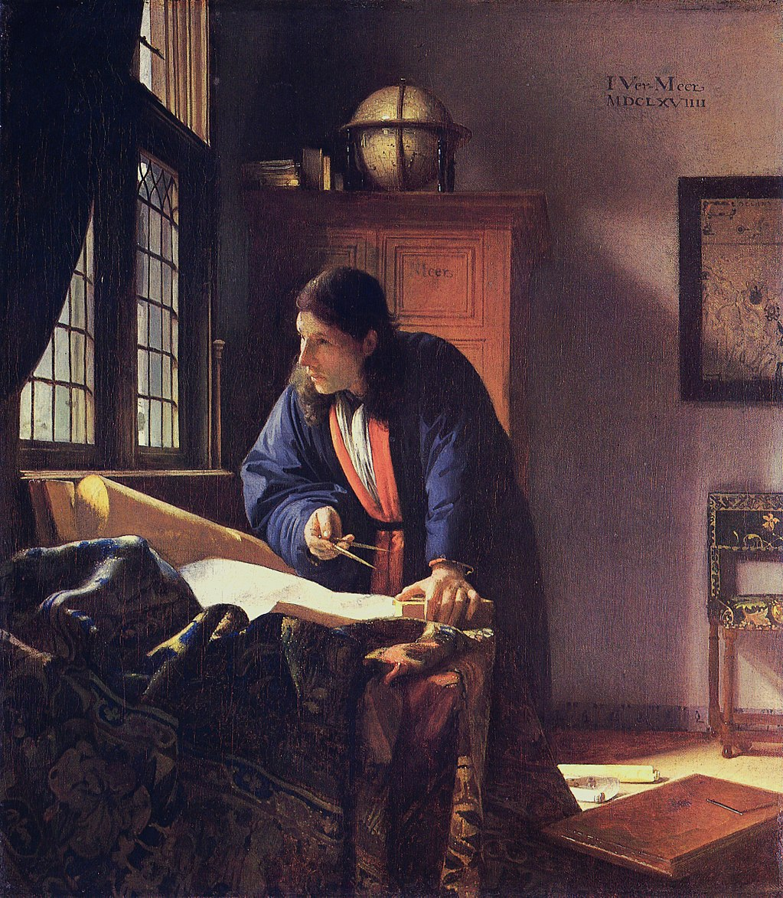

<head>
<meta charset="UTF-8" />
<meta name="keywords" content="drawing, painting" />
<meta name="description" content="drawings by Sunjy" />
<title>Sunjy</title>
<link rel="shortcut icon" type="image/x-icon" href="../../mImages/mCommon/favicon.ico" media="screen" />
<link rel="stylesheet" type="text/css" href="../../mCsses/mCommon/mCssA.css" />
<link rel="stylesheet" type="text/css" href="../../mCsses/mCommon/mCssB.css" />
<link rel="stylesheet" type="text/css" href="../../mCsses/mCommon/mCssC.css" />
<link rel="stylesheet" type="text/css" href="../../mCsses/mCommon/mCssD.css" />
<link rel="stylesheet" type="text/css" href="../../mCsses/mContent/mCssA.css" />
<link rel="stylesheet" type="text/css" href="../../mCsses/mContent/mCssB.css" />
<link rel="stylesheet" type="text/css" href="../../mCsses/mContent/mCssC.css" />
<link rel="stylesheet" type="text/css" href="../../mCsses/mContent/mCssD.css" />
</head>
<script type="text/javascript" src="../../mScripts/mContent/mContentAA.js" /></script>
<script type="text/javascript" src="../../mScripts/mContent/mContentAB.js" /></script>
<script type="text/javascript" src="../../mScripts/mContent/mContentAC.js" /></script>
<script type="text/javascript" src="../../mScripts/mContent/mContentAD.js" /></script>
<script type="text/javascript"></script> 
<script type="text/javascript">
document.write('<div class="mImgAbsolute"></div>');
/*
document.write('<p class="mFontSizeBColor" />From a white paper...</p>');
document.write('<table class="center"><tr><td>');
document.write('');
document.write('</td></tr></table>');
*/
</script>


<script type="text/javascript">
document.write('<p class="mFontSizeBColor" />The Geographer</p>');
document.write('<p class="mFontSizeSColor" />By Johannes Vermeer, 1669. “The Geographer” is dressed in a Japanese-style robe, which was popular at the time with scholars.<br><br>He is depicted deep in thought with his active and engaging stance, surrounded by maps, charts, a globe and books, and the dividers which he holds in his hand.<br><br>The geographer has measured distances on a map, and now he has paused for thought.<br><br>Scientific analysis shows that Vermeer made several changes to this painting to enhance the feeling of energy in the picture.<br><br>The geographer’s head was initially in a different position with the man looking down, rather than peering out the window. The dividers he holds in his hand were initially vertical, not horizontal.<br><br>The man’s face is now slightly blurred, suggesting movement, his eyes are narrowed, to demonstrate deep thought. Vermeer has captured the moment in which the geographer is surveying the world in his imagination.<br><br>Vermeer has captured the perfect image of the Dutch Golden Age’s focus on global exploration and discovery. The globe and the map on the wall represent the state of the art in cartography.<br><br>These also symbolic of the Dutch leadership in the fields of navigation and exploration. Europe’s coastlines and the Indian Ocean are essential territories for the country’s maritime-trade-based economy.<br><br>This painting is closely related to Vermeer’s “The Astronomer”; he used the same model in the same dress, and the canvas for the two works came from the same bolt of material.<br><br>This painting is one of only three paintings Vermeer signed and dated; the other two are The Astronomer and The Procuress.</p>');
document.write('<table class="center" /><tr><td>');
document.write('<br>He is depicted deep in thought with his active and engaging stance, surrounded by maps, charts, a globe and books, and the dividers which he holds in his hand.<br><br>The geographer has measured distances on a map, and now he has paused for thought.<br><br>Scientific analysis shows that Vermeer made several changes to this painting to enhance the feeling of energy in the picture.<br><br>The geographer’s head was initially in a different position with the man looking down, rather than peering out the window. The dividers he holds in his hand were initially vertical, not horizontal.<br><br>The man’s face is now slightly blurred, suggesting movement, his eyes are narrowed, to demonstrate deep thought. Vermeer has captured the moment in which the geographer is surveying the world in his imagination.<br><br>Vermeer has captured the perfect image of the Dutch Golden Age’s focus on global exploration and discovery. The globe and the map on the wall represent the state of the art in cartography.<br><br>These also symbolic of the Dutch leadership in the fields of navigation and exploration. Europe’s coastlines and the Indian Ocean are essential territories for the country’s maritime-trade-based economy.<br><br>This painting is closely related to Vermeer’s “The Astronomer”; he used the same model in the same dress, and the canvas for the two works came from the same bolt of material.<br><br>This painting is one of only three paintings Vermeer signed and dated; the other two are The Astronomer and The Procuress." />');
document.write('</td></tr></table>');
</script>


